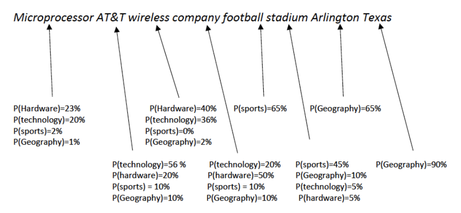

Steps in training the model
For example, let us consider the following text -> “The microprocessor was made by AT&T, the wireless company that also has a big football
stadium in Arlington, Texas”
After data cleaning, the above sentence looks like this : “Microprocessor AT&T wireless company football stadium Arlington Texas”
The words of a sentence are given a probability score, and the sentence is
classified as a particular group according to the max probability score.

{% if input==1 %}
(Please wait 4-5 minutes for results, do not close!)
{% elif input==2 %}
Accuracy of the trained NB classifier : {{accuracy}}%
Time lapsed : {{timelapsed}} seconds
{% endif %}
{% endblock %}